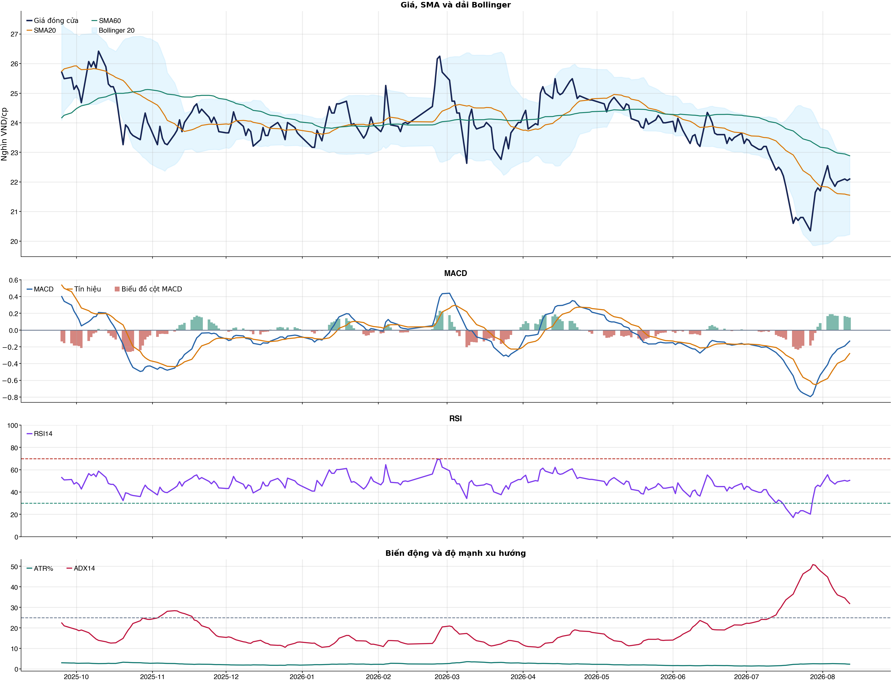
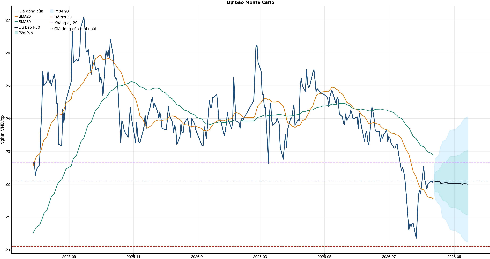
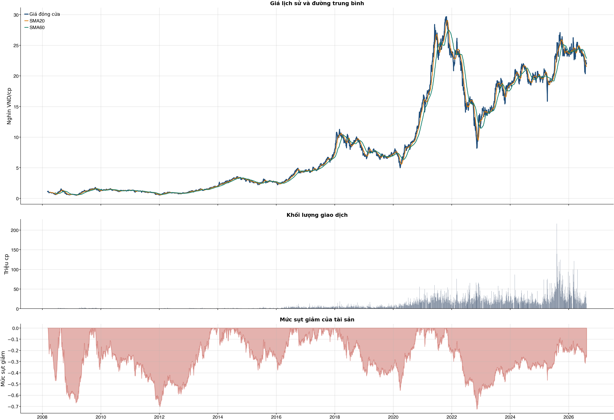

Kết quả chính
KPI đọc nhanh trước, chi tiết bấm mở bên dướiChi phí & vòng lệnh
Trọng tâm: tránh giao dịch nhiều làm phí ăn hết lợi thếBảng chính: turnover, gross, phí và net61 / 38 / 31 / 20 / 10 / 5 / 1
| Kịch bản | Cách chọn | Vòng | Gross trước phí | Phí | Net sau phí | Sharpe | Ghi chú |
|---|---|---|---|---|---|---|---|
| Gốc | Ngưỡng gốc ≥ 0.55 | 72 | -6.5% | 35.4% | -34.5% | -1.70 | Baseline 61 vòng nếu model phát tín hiệu nhiều. |
| Ngưỡng 0.58 | Chỉ vào lệnh khi xác suất ≥ 0.58 | 42 | -10.3% | 20.7% | -27.1% | -1.45 | Tăng ngưỡng để giảm vòng lệnh. |
| Ngưỡng 0.60 | Chỉ vào lệnh khi xác suất ≥ 0.60 | 33 | -7.5% | 16.2% | -21.4% | -1.16 | Tăng ngưỡng để giảm vòng lệnh. |
| Ngưỡng 0.62 | Chỉ vào lệnh khi xác suất ≥ 0.62 | 26 | -4.8% | 12.8% | -16.2% | -0.89 | Tăng ngưỡng để giảm vòng lệnh. |
| Giới hạn 10 vòng | Tối đa 10 vòng, ưu tiên xác suất cao hơn | 10 | -0.2% | 4.9% | -5.0% | -0.43 | Ngưỡng xác suất trong nhóm: 68.8%. |
| Giới hạn 5 vòng | Tối đa 5 vòng, ưu tiên xác suất cao hơn | 5 | +8.3% | 2.5% | +5.6% | 0.85 | Ngưỡng xác suất trong nhóm: 70.4%. |
| Giới hạn 1 vòng | Tối đa 1 vòng, ưu tiên xác suất cao hơn | 1 | +0.9% | 0.5% | +0.4% | 0.58 | Ngưỡng xác suất trong nhóm: 73.6%. |
Đọc bảng này từ trái sang phải: số vòng càng ít thì phí càng thấp, nhưng kết quả sau phí vẫn chỉ là kiểm thử OOS. Các dòng 10/5/1 giới hạn số vòng bằng xác suất model cao hơn, không phải chọn lệnh thắng sau khi biết kết quả và không tự biến NO_EDGE thành BUY.
Breakdown trước phí / sau phívì sao gross dương nhưng net âm
| Kịch bản trước chi phí | -6.5% | Gross PnL -6,536,925 VND; chưa trừ commission/slippage/tax. |
| Chi phí giao dịch | -35.4% | 72 vòng; entry 20.0 bps + exit 30.0 bps = 50.0 bps/vòng; tổng phí 29,583,920 VND. |
| Kịch bản sau chi phí | -34.5% | Net PnL -34,478,920 VND; gross - cost gap khoảng +27.9%. |
| Ngưỡng phí hòa vốn | -9.2 bps/vòng | Phí hiện tại 50.0 bps/vòng; cao hơn ngưỡng này thì gross dương vẫn có thể thành net âm. |
| Kết luận hành động | CHƯA CÓ LỢI THẾ (NO_EDGE) | Không đủ lợi thế sau phí; giữ NO_EDGE. |
| Cách cải thiện cần test | Giảm turnover | Hiện có 72 phiên active/72 vòng; nên test threshold 0.58/0.60/0.62 hoặc giữ nhiều phiên hơn. |
Kiểm thử chiến lược ngoài mẫu sau chi phí72 vòng
| Lợi nhuận ròng | -34.5% | 738 quan sát ngoài mẫu |
| Sharpe | -1.70 | Sau chi phí |
| Mức sụt giảm tối đa | -36.7% | 72 vòng giao dịch |
| Chi phí giả định | 50.0 bps | Một vòng mua và bán |
So sánh mô hìnhXGBoost vs Logistic
| XGBoost | 0.525 | AUC 0.581 |
| Logistic | 0.517 | AUC 0.567 |
| Đa số | 0.500 | Mốc so sánh |
Mức độ quan trọng của đặc trưngtop feature
| adx_14 | 10.59 | Mức đóng góp |
| bb_position_20 | 9.79 | Mức đóng góp |
| market_return_1d | 9.52 | Mức đóng góp |
| return_3d | 8.89 | Mức đóng góp |
| macd_pct | 8.89 | Mức đóng góp |
| relative_strength_20d | 8.82 | Mức đóng góp |
| return_10d | 8.76 | Mức đóng góp |
| macd_hist_pct | 8.72 | Mức đóng góp |
Điều kiện phát hành tín hiệuCHƯA CÓ LỢI THẾ (NO_EDGE)
| AUC của mô hình | ĐẠT | Điều kiện phát hành tín hiệu |
| Độ chính xác cân bằng của mô hình | ĐẠT | Điều kiện phát hành tín hiệu |
| XGBoost vượt mô hình Logistic đối chứng | ĐẠT | Điều kiện phát hành tín hiệu |
| Xác suất tăng đạt ngưỡng | KHÔNG ĐẠT | Điều kiện phát hành tín hiệu |
| Bối cảnh kỹ thuật đạt ngưỡng | KHÔNG ĐẠT | Điều kiện phát hành tín hiệu |
| Tỷ lệ lợi nhuận/rủi ro đạt ngưỡng | ĐẠT | Điều kiện phát hành tín hiệu |
| Dữ liệu còn mới | ĐẠT | Điều kiện phát hành tín hiệu |
| Có khối lượng vị thế hợp lệ | ĐẠT | Điều kiện phát hành tín hiệu |
| Có kết quả kiểm thử chiến lược ngoài mẫu | ĐẠT | Điều kiện phát hành tín hiệu |
| Mẫu kiểm thử chiến lược đủ lớn | ĐẠT | Điều kiện phát hành tín hiệu |
| Kiểm thử chiến lược có lợi thế ròng | KHÔNG ĐẠT | Điều kiện phát hành tín hiệu |
Quản trị rủi rostop / target
| Rủi ro/lệnh | 1.0% | 1,000,000 VND |
| Mức dừng lỗ | 21.32 | Rủi ro mỗi cổ phiếu 0.89 |
| Mục tiêu 1 | 24.06 | Lợi nhuận/rủi ro 2.08 |
| Mục tiêu 2 | 24.06 | Dự báo/kháng cự |
Kỹ thuật
Biểu đồ mở sẵn, bảng tín hiệu thu gọnBiểu đồ kỹ thuật

Tín hiệu kỹ thuậtchi tiết
| Xu hướng | Cẩn thận | Giá nằm dưới SMA60. |
| MACD | Tích cực | MACD trên signal, histogram dương. |
| RSI14 | Trung tính | RSI 50.4. |
| Bollinger | Ổn định | Giá nằm trong dải Bollinger. |
| ADX | Xu hướng giảm | ADX 31.9, -DI vượt +DI. |
| Thanh khoản | Thấp | 0.61 lần trung bình. |
| Stochastic | Hồi phục | %K nằm trên %D. |
Cơ bản & tin tức
Các bảng dài để trong nút bungPhân tích cơ bảnBCTC/tỷ số
| P/E | 8.02 | 2026-Q2 |
| P/B | 1.32 | 2026-Q2 |
| P/S | 0.98 | 2026-Q2 |
| ROE | 17.4% | 2026-Q2 |
| ROA | 8.9% | 2026-Q2 |
| Gross margin | 16.4% | 2026-Q2 |
| Net margin | 12.3% | 2026-Q2 |
| Debt/Equity | 0.97 | 2026-Q2 |
| Current ratio | 1.14 | 2026-Q2 |
| NPL | 0.0% | 2026-Q2 |
| Dividend yield | 0.0% | 2026-Q2 |
| Market cap | 186,167.4 tỷ | 2026-Q2 |
| Revenue Growth | 53.6% | 2026-Q2 YoY |
| Profit Growth | 49.7% | 2026-Q2 YoY |
| Dòng tiền từ HĐKD | 5,253.7 tỷ | 2026-Q2 |
| CAPEX | -6,703.2 tỷ | 2026-Q2 |
| Lợi nhuận sau thuế | 6,424.5 tỷ | 2026-Q2 |
| Lợi nhuận hoạt động | 7,155.0 tỷ | 2026-Q2 |
| Chi phí lãi vay | -1,519.6 tỷ | 2026-Q2 |
| Tiền và tương đương tiền | 9,782.1 tỷ | 2026-Q2 |
| Vay ngắn hạn | 71,433.4 tỷ | 2026-Q2 |
| Vay dài hạn | 27,096.6 tỷ | 2026-Q2 |
| Tổng tài sản | 278,929.8 tỷ | 2026-Q2 |
| Tổng nợ phải trả | 137,413.8 tỷ | 2026-Q2 |
| Vốn chủ sở hữu | 141,516.0 tỷ | 2026-Q2 |
| Khoản phải thu | 18,040.2 tỷ | 2026-Q2 |
| Hàng tồn kho | 55,607.9 tỷ | 2026-Q2 |
| Dòng tiền tự do (CFO - CAPEX) | -1,449.5 tỷ | 2026-Q2 |
| CFO / Lợi nhuận sau thuế | 0.82 | 2026-Q2 |
| Nợ vay ròng | 88,747.9 tỷ | 2026-Q2 |
| Nợ vay / Vốn chủ sở hữu | 0.70 | 2026-Q2 |
| Phải thu / Tổng tài sản | 6.5% | 2026-Q2 |
| Khả năng trả lãi (EBIT / lãi vay) | 4.71 | 2026-Q2 |
Tin tức doanh nghiệpresearch only
| Trạng thái | Có dữ liệu | research_only |
| Nguồn / số bài | VCI | 50 |
| Bài đủ timestamp | 50 | Chỉ các bài này mới được phép dùng point-in-time |
| Sentiment 5 ngày | 0.00 | 0.0 bài trước cutoff |
| Phương pháp | keyword_heuristic_v1 | Research only; chưa dùng làm tín hiệu mua/bán |
Dự báo
Kịch bản giá và lịch sử drawdownDự báo ngắn hạn20 phiên
| 2026-08-13 | 22.06 | P10 21.73 / P90 22.53 |
| 2026-08-14 | 22.07 | P10 21.53 / P90 22.78 |
| 2026-08-17 | 22.08 | P10 21.40 / P90 22.87 |
| 2026-08-18 | 22.09 | P10 21.37 / P90 23.00 |
| 2026-08-19 | 22.03 | P10 21.32 / P90 23.15 |
| 2026-08-20 | 22.03 | P10 21.09 / P90 23.22 |
| 2026-08-21 | 22.03 | P10 20.97 / P90 23.31 |
| 2026-08-24 | 22.04 | P10 20.91 / P90 23.36 |
Lịch giao dịch Việt Nam dùng cho forecastkhông tính T7/CN/lễ
VN stock calendar: loại Thứ Bảy/Chủ Nhật và các ngày nghỉ 2026 đã công bố; ngày làm bù Thứ Bảy không được tính là phiên giao dịch chứng khoán.
Ngày nghỉ đã loại: 2026-01-01, 2026-01-02, 2026-02-16, 2026-02-17, 2026-02-18, 2026-02-19, 2026-02-20, 2026-04-27, 2026-04-30, 2026-05-01, 2026-08-31, 2026-09-01, 2026-09-02
Nếu HOSE/HNX/UPCoM công bố nghỉ đột xuất, cần thêm ngày đó vào config `market_holidays` rồi chạy lại report.
Biểu đồ dự báo

Lịch sử giá và mức sụt giảm

Báo cáo dùng để học tập và lập kịch bản, không phải khuyến nghị mua/bán.
Phân tích AI có kiểm chứngbấm mở
Trạng thái quyết định: NO_EDGE
Tóm tắt: ML decision hiện giữ nguyên NO_EDGE. News Reader đã trích đoạn có nguồn của 4 bài để phân loại chủ đề (ket_qua_kinh_doanh: 2, co_tuc_va_hanh_dong_doanh_nghiep: 1, vi_mo: 1, nganh: 2), nhưng các trích đoạn này không tạo bằng chứng mới cho quyết định đầu tư.
Kỹ thuật: Artifact kỹ thuật: bias Trung tính; điểm -1. Chi tiết artifact: Xu hướng: Cẩn thận (Giá nằm dưới SMA60.); MACD: Tích cực (MACD trên signal, histogram dương.); RSI14: Trung tính (RSI 50.4.); Bollinger: Ổn định (Giá nằm trong dải Bollinger.); ADX: Xu hướng giảm (ADX 31.9, -DI vượt +DI.); Thanh khoản: Thấp (0.61 lần trung bình.); Stochastic: Hồi phục (%K nằm trên %D.)
Cơ bản: Artifact cơ bản: Hòa Phát; kỳ 2026-Q2; P/E 8.02; P/B 1.32; ROE 17.4%; ROA 8.9%; Debt/Equity 0.97; Revenue Growth 53.6%; Profit Growth 49.7%.
Tin tức: Đã đọc trích đoạn giới hạn của 4 bài; phân nhóm rule-based: ket_qua_kinh_doanh: 2, co_tuc_va_hanh_dong_doanh_nghiep: 1, vi_mo: 1, nganh: 2. Tác động cần kiểm chứng: Đối chiếu doanh thu/lợi nhuận trong bài với BCTC và kỳ vọng thị trường. Kiểm tra ngày GDKHQ, tỷ lệ, nguồn chi trả và nguy cơ pha loãng trước khi đánh giá tác động. Đối chiếu thời điểm công bố và kênh tác động lãi suất/tỷ giá với mô hình kinh doanh. So sánh tín hiệu ngành với thị phần, nhu cầu và đối thủ trước khi suy luận cho riêng doanh nghiệp. Đây không phải sentiment hay dự báo tác động giá.
Live research: Live snapshot lấy lúc 2026-08-12T17:11:50.923330+00:00; News Reader đọc được 4 bài. ML có 3 lý do guard và vẫn là NO_EDGE. Không dùng tin live để train/backtest.
Rủi ro cần kiểm chứng
- ML guard: Probability 46.8% < 55.0%
- ML guard: Technical score -1 < 2
- ML guard: Lợi thế OOS ròng không đạt: return=-0.34478919999999935, Sharpe=-1.7033390623881626
- News Reader: Đối chiếu doanh thu/lợi nhuận trong bài với BCTC và kỳ vọng thị trường.
- News Reader: Kiểm tra ngày GDKHQ, tỷ lệ, nguồn chi trả và nguy cơ pha loãng trước khi đánh giá tác động.
- News Reader: Đối chiếu thời điểm công bố và kênh tác động lãi suất/tỷ giá với mô hình kinh doanh.
- News Reader: So sánh tín hiệu ngành với thị phần, nhu cầu và đối thủ trước khi suy luận cho riêng doanh nghiệp.
- Chỉ lưu trích đoạn giới hạn để kiểm chứng nguồn; không lưu hay hiển thị toàn văn bài báo.
- Phân nhóm là keyword rule-based để định tuyến research, không phải sentiment hay dự báo tác động giá.
- Dữ liệu News Reader chỉ phục vụ research/report; không dùng làm feature train/backtest khi chưa có lịch sử available_at point-in-time.
- Tin live/trích đoạn cần mở URL gốc để kiểm chứng bối cảnh, số liệu và thời điểm trước khi sử dụng.
Bằng chứng
- ML decision artifact: NO_EDGE. Probability 46.8% < 55.0%
- ML decision artifact: NO_EDGE. Technical score -1 < 2
- ML decision artifact: NO_EDGE. Lợi thế OOS ròng không đạt: return=-0.34478919999999935, Sharpe=-1.7033390623881626
- News Reader [24HMoney]: HPG đã hoàn thành 70% mục tiêu lợi nhuận năm, cổ phiếu ngành thép liệu sắp có sóng? - 24HMoney | nhóm: ket_qua_kinh_doanh, nganh (2026-08-12T01:15:45+00:00)
- News Reader [vnbusiness.vn]: Cổ phiếu thép: Lợi nhuận tăng, dòng tiền hồi phục? - vnbusiness.vn | nhóm: ket_qua_kinh_doanh, vi_mo, nganh (2026-08-12T00:39:09+00:00)
- News Reader [nguoiquansat.vn]: Tiết lộ bất ngờ về lượng sở hữu cổ phiếu HPG của con gái tỷ phú Trần Đình Long - nguoiquansat.vn | nhóm: co_tuc_va_hanh_dong_doanh_nghiep (2026-08-07T04:27:01+00:00)
- News Reader [24HMoney]: Bất ngờ với lượng cổ phiếu HPG mà con gái tỷ phú Trần Đình Long đang nắm giữ - 24HMoney | nhóm: khác (2026-08-07T08:28:07+00:00)
Báo cáo chỉ tổng hợp artifact đã lưu để nghiên cứu; không phải khuyến nghị mua/bán. Quyết định và vị thế vẫn bị khóa theo signal_decision.json.
Tác động của tin lên model
Trạng thái: research_only · Áp vào signal chính: not_applied
Khuyến nghị hệ thống: Chỉ hiển thị như shadow/research, chưa thay signal chính.
Gate chưa đạt: min_articles_60, min_feature_rows_30, news_feature_gain_positive, balanced_accuracy_at_least_0_52
News feature importance
| Feature tin | Gain |
|---|---|
| news_count_lookback | 0.000 |
| news_sentiment_mean_lookback | 0.000 |
| news_positive_count_lookback | 0.000 |
| news_negative_count_lookback | 0.000 |
| news_earnings_count_lookback | 0.000 |
| news_corporate_action_count_lookback | 0.000 |
| news_legal_count_lookback | 0.000 |
| news_source_count_lookback | 0.000 |
Điều kiện bật news vào signal chính
| Gate | Kết quả |
|---|---|
| min_articles_60 | Chưa đạt |
| min_feature_rows_30 | Chưa đạt |
| news_feature_gain_positive | Chưa đạt |
| auc_at_least_0_55 | Đạt |
| balanced_accuracy_at_least_0_52 | Chưa đạt |
CSV dựng từ live snapshots chỉ phù hợp smoke test/research; cần lịch sử available_at dài hơn trước khi dùng production.
Tin web đã lấyheadline + nguồn
| Nguồn | Tiêu đề | Thời điểm | Link |
|---|---|---|---|
| 24HMoney | HPG đã hoàn thành 70% mục tiêu lợi nhuận năm, cổ phiếu ngành thép liệu sắp có sóng? - 24HMoney | 2026-08-12T01:15:45+00:00 | Mở nguồn |
| vnbusiness.vn | Cổ phiếu thép: Lợi nhuận tăng, dòng tiền hồi phục? - vnbusiness.vn | 2026-08-12T00:39:09+00:00 | Mở nguồn |
| CafeF | HPG:Công ty cổ phần Tập đoàn Hòa Phát (HOSE) - CafeF | 2026-08-07T07:00:00+00:00 | Mở nguồn |
| nguoiquansat.vn | Tiết lộ bất ngờ về lượng sở hữu cổ phiếu HPG của con gái tỷ phú Trần Đình Long - nguoiquansat.vn | 2026-08-07T04:27:01+00:00 | Mở nguồn |
| 24HMoney | Bất ngờ với lượng cổ phiếu HPG mà con gái tỷ phú Trần Đình Long đang nắm giữ - 24HMoney | 2026-08-07T08:28:07+00:00 | Mở nguồn |
| CafeF | Dòng vốn ẩn danh từng đổ vào FPT, VIC, HPG... bất ngờ quay lại gom hàng nghìn tỷ đồng trên thị trường chứng khoán Việt - CafeF | 2026-08-11T03:15:00+00:00 | Mở nguồn |
| Tạp chí Kinh tế chứng khoán Việt Nam | Sau kết quả kinh doanh tích cực, cổ phiếu Hòa Phát (HPG) được dự báo tăng hơn 50% - Tạp chí Kinh tế chứng khoán Việt Nam | 2026-08-06T09:35:00+00:00 | Mở nguồn |
News Reader: bài đã đọc và trích đoạnbấm mở trích đoạn
| Nguồn | Tiêu đề | Nhóm | Thời điểm | Trích đoạn đã đọc | Link |
|---|---|---|---|---|---|
| 24HMoney | HPG đã hoàn thành 70% mục tiêu lợi nhuận năm, cổ phiếu ngành thép liệu sắp có sóng? - 24HMoney | ket_qua_kinh_doanh, nganh | 2026-08-12T01:15:45+00:00 | Xem trích đoạnQuý II/2026, Hòa Phát ghi nhận doanh thu 55.557 tỷ đồng, tăng 53% so với cùng kỳ. Lợi nhuận sau thuế đạt 6.424 tỷ đồng, tăng 51%. Tính chung 6 tháng đầu năm, doanh thu đạt 108.870 tỷ đồng, lợi nhuận sau thuế lên tới 15.480 tỷ đồng, lần lượt tăng 47% và 103%. Như vậy, Hòa Phát đã hoàn thành khoảng 52% kế hoạch doanh thu và 70% mục tiêu lợi nhuận cả năm. Điểm đáng chú ý nhất là tăng trưởng lần này đến chủ yếu từ sản lượng, chứ không đơn thuần nhờ giá thép tăng. Khi nhu cầu thép trong nước phục hồi, những doanh nghiệp có quy mô lớn, thị phần cao và năng lực sản xuất mạnh sẽ có lợi thế rất rõ. Với Hòa Phát, thép vẫn là “con át chủ bài”, đóng góp khoảng 93% doanh thu và 68% lợi nhuận trong 6 tháng đầu năm. Nói cách khác, câu chuyện của HPG đang dần chuyển từ “chờ ngành thép hồi phục” sang “doanh nghiệp đã thực sự tăng trưởng”. Nhưng nếu HPG là câu chuyện tăng trưởng cơ bản, thì HSG và NKG lại là câu chuyện đánh cược vào chu kỳ hồi phục của tôn mạ. 🔹 HSG: kỳ vọng nằm ở việc tiêu thụ nội địa cải thiện và biên lợi nhuận được kiểm soát tốt hơn. 🔹 NKG: đáng chú ý hơn ở câu chuyện mở rộng công suất, khi dự án Nam Kim Phú Mỹ được kỳ vọng vận hành thương mại từ quý III/2026. Tất nhiên, cơ hội càng lớn thì rủi ro cũng không nhỏ. Xuất khẩu tôn mạ vẫn gặp nhiều rào cản, sản lượng chưa thực sự bứt phá. Với NKG, việc tăng công suất cũng đồng nghĩa áp lực về vốn lưu động , chi phí tài chính và hiệu quả sử dụng tài sản có thể tăng lên. 👉 HPG: lợi nhuận đang được chứng minh bằng kết quả kinh doanh thực tế. 👉 HSG, NKG: tiềm năng lớn hơn nếu chu kỳ tôn mạ quay lại, nhưng biến động cũng có thể mạnh hơn. Số giấy phép mạng xã hội: 203/GP-BTTTT do BỘ TT & TT cấp ngày | Mở nguồn |
| vnbusiness.vn | Cổ phiếu thép: Lợi nhuận tăng, dòng tiền hồi phục? - vnbusiness.vn | ket_qua_kinh_doanh, vi_mo, nganh | 2026-08-12T00:39:09+00:00 | Xem trích đoạnBạn bè quốc tế gửi thông điệp chúc mừng Đại hội XIV của Đảng Cổ phiếu thép: Lợi nhuận bật tăng, dòng tiền có tìm lại 'sức nóng'? Sau giai đoạn chịu sức ép bởi nhu cầu yếu, giá bán và biên lợi nhuận suy giảm, ngành thép đang cho thấy những tín hiệu tích cực hơn trong quý II/2026. Quý II/2026, Hòa Phát (HPG) ghi nhận doanh thu 55.557 tỷ đồng, tăng 53% so với cùng kỳ, trong khi lợi nhuận sau thuế đạt 6.424 tỷ đồng, tăng 51%. Lũy kế 6 tháng, doanh thu đạt 108.870 tỷ đồng và lợi nhuận sau thuế đạt 15.480 tỷ đồng, lần lượt tăng 47% và 103% so với cùng kỳ. Với kết quả này, Hòa Phát đã hoàn thành 52% kế hoạch doanh thu và tới 70% mục tiêu lợi nhuận cả năm. Đáng chú ý, tăng trưởng của “anh cả” ngành thép đang được hỗ trợ bởi sản lượng chứ không đơn thuần đến từ yếu tố giá. Đây chính là điểm khác biệt so với phần còn lại của nhóm thép. Khi nhu cầu nội địa tăng trở lại, doanh nghiệp có quy mô sản xuất lớn, thị phần cao và năng lực cung ứng đa dạng sẽ có khả năng chuyển hóa tăng trưởng nhu cầu thành doanh thu và lợi nhuận nhanh hơn. Đặc biệt, mảng thép hiện vẫn là động lực chính của Hòa Phát, đóng góp khoảng 93% doanh thu và 68% lợi nhuận của tập đoàn trong 6 tháng đầu năm. Với cổ phiếu HPG, câu chuyện vì thế đang chuyển từ “kỳ vọng phục hồi” sang “kiểm chứng tăng trưởng”. Khi lợi nhuận thực tế đã tăng mạnh, nhà đầu tư có cơ sở hơn để định giá lại doanh nghiệp thay vì chỉ đặt cược vào chu kỳ thép. Một yếu tố khác đang hỗ trợ HPG là dòng tiền. Trong tháng 6, cổ phiếu này từng ghi nhận phiên giao dịch đáng chú ý khi khối ngoại mua hơn 5,6 triệu cổ phiếu, trong tổng khối lượng khớp lệnh hơn 25 triệu đơn vị. Diễn biến này cho thấy HPG vẫn có sức hút tương đối lớn với dòng tiền tổ chức khi cổ phiếu điều chỉnh về vùng giá được đánh giá hợp lý. Một số báo cáo phân tích cũng duy trì quan điểm tích cực với HPG nhờ nhu cầu thép nội địa, hiệu suất vận hành tại Dung Quất 2 và triển vọng sản lượng tăng mạnh trong năm 2026. Tuy nhiên, nếu HPG đang được nhìn nhận như đại diện cho câu chuyện tăng trưởng cơ bản, thì HSG (Hoa Sen) và NKG (Thép Nam Kim) lại mang màu sắc khác: cổ phiếu phục hồi theo chu kỳ. Nhóm tôn mạ đang đứng trước nhiều cơ hội nhưng cũng đối mặt với không ít thách thức. Sản lượng tôn mạ 6 tháng đầu năm vẫn chịu sức ép, đặc biệt ở thị trường xuất khẩu. Điều này khiến biên lợi nhuận và khả năng tiêu thụ tiếp tục là hai biến số quan trọng đối với các doanh nghiệp hạ | Mở nguồn |
| nguoiquansat.vn | Tiết lộ bất ngờ về lượng sở hữu cổ phiếu HPG của con gái tỷ phú Trần Đình Long - nguoiquansat.vn | co_tuc_va_hanh_dong_doanh_nghiep | 2026-08-07T04:27:01+00:00 | Xem trích đoạnTại Tập đoàn Hòa Phát, hầu hết con cái của nhiều lãnh đạo HĐQT đang nắm lượng lớn cổ phiếu HPG. Sau đợt phát hành cổ phiếu trả cổ tức năm 2025 với tỷ lệ 10% hồi tháng 5/2026, vốn điều lệ của CTCP Tập đoàn Hòa Phát (mã HPG ) đã tăng lên gần 84.430 tỷ đồng, thuộc nhóm doanh nghiệp có quy mô vốn điều lệ lớn nhất thị trường chứng khoán Việt Nam. Theo quy mô vốn mới, ông Trần Đình Long , Chủ tịch HĐQT Hòa Phát, đang nắm giữ 25,8% vốn, tương ứng hơn 2,178 tỷ cổ phiếu HPG. Qua đó, ông Long tiếp tục là một trong những lãnh đạo doanh nghiệp trực tiếp sở hữu lượng cổ phiếu lớn nhất thị trường. Tuy nhiên, tại thời điểm cuối quý II/2026, trước khi lượng cổ phiếu trả cổ tức được cập nhật vào vốn điều lệ, Hòa Phát có gần 76.800 tỷ đồng vốn điều lệ, tương ứng hơn 7,67 tỷ cổ phiếu lưu hành. Theo báo cáo tình hình quản trị 6 tháng đầu năm, ông Long khi đó trực tiếp sở hữu khoảng 1,98 tỷ cổ phiếu HPG, tương đương 25,8% vốn. Đáng chú ý, trong gia đình ông Long, con trai Trần Vũ Minh là người duy nhất được ghi nhận sở hữu cổ phiếu HPG. Tại cuối tháng 6, ông Minh trực tiếp nắm gần 210 triệu cổ phiếu, tương đương 2,73% vốn Hòa Phát. Trong khi đó, con gái Trần Huyền Linh và con dâu Ngô Thùy Tiên không sở hữu cổ phiếu HPG tại thời điểm này. Nhiều gia đình lãnh đạo đều là cổ đông Hòa Phát Điểm đáng chú ý là sự hiện diện của thế hệ F2 (các con của lãnh đạo sáng lập) trong cơ cấu sở hữu Hòa Phát không chỉ xuất hiện ở gia đình ông Trần Đình Long. Nhiều thành viên HĐQT khác cũng có vợ hoặc con cùng nắm giữ cổ phiếu HPG với số lượng đáng kể. Cụ thể, Phó Chủ tịch HĐQT Trần Tuấn Dương đang sở hữu gần 177,6 triệu cổ phiếu HPG, tương đương 2,31% vốn. Hai con gái và một con trai của ông Dương mỗi người cùng nắm gần 9,3 triệu cổ phiếu. Tương tự, Phó Chủ tịch HĐQT Nguyễn Mạnh Tuấn sở hữu hơn 174 triệu cổ phiếu HPG, tương đương 2,27% vốn. Vợ và hai con trai của ông cũng đang sở hữu cổ phiếu Hòa Phát, với lượng nắm giữ mỗi người trong khoảng 10-14 triệu đơn vị. Một trường hợp đáng chú ý khác là thành viên HĐQT Nguyễn Ngọc Quang, người đồng hành cùng ông Trần Đình Long từ những ngày đầu thành lập Hòa Phát. Ông Quang trực tiếp sở hữu gần 125,5 triệu cổ phiếu, tương đương 1,63% vốn; trong khi vợ và hai người con sở hữu tổng cộng khoảng 15,6 triệu cổ phiếu HPG. Với thành viên HĐQT Hoàng Quang Việt, lượng cổ phiếu HPG do vợ và hai người con cùng nắm giữ cũng lên tới 38 triệu đơn vị. Như vậy, bên cạnh | Mở nguồn |
| 24HMoney | Bất ngờ với lượng cổ phiếu HPG mà con gái tỷ phú Trần Đình Long đang nắm giữ - 24HMoney | khác | 2026-08-07T08:28:07+00:00 | Xem trích đoạnTheo báo cáo tình hình quản trị 6 tháng đầu năm, ông Trần Đình Long khi đó trực tiếp sở hữu khoảng 1,98 tỷ cổ phiếu HPG , tương đương 25,8% vốn. Đáng chú ý, trong gia đình ông Long, con trai Trần Vũ Minh là người duy nhất được ghi nhận sở hữu cổ phiếu HPG. Tại cuối tháng 6, ông Minh trực tiếp nắm gần 210 triệu cổ phiếu, tương đương 2,73% vốn Hòa Phát. Trong khi đó, con gái Trần Huyền Linh và con dâu Ngô Thùy Tiên không sở hữu cổ phiếu HPG tại thời điểm này. Số giấy phép mạng xã hội: 203/GP-BTTTT do BỘ TT & TT cấp ngày | Mở nguồn |
Chi tiết báo cáo tài chínhbảng dài
Kết quả kinh doanh — 4 kỳ gần nhất
Hiển thị 35 dòng đầu; mở CSV đầy đủ.
| Khoản mục | 2026-Q2 | 2026-Q1 | 2025-Q4 | 2025-Q3 |
|---|---|---|---|---|
| Doanh thu bán hàng và cung cấp dịch vụ | 55,557.2 tỷ | 53,312.9 tỷ | 47,301.6 tỷ | 36,793.9 tỷ |
| Các khoản giảm trừ doanh thu | -398.3 tỷ | -412.1 tỷ | -1,125.1 tỷ | -386.5 tỷ |
| Doanh thu thuần | 55,158.9 tỷ | 52,900.8 tỷ | 46,176.5 tỷ | 36,407.4 tỷ |
| Giá vốn hàng bán | -44,671.1 tỷ | -44,535.8 tỷ | -39,779.8 tỷ | -30,320.2 tỷ |
| Lợi nhuận gộp | 10,487.8 tỷ | 8,365.1 tỷ | 6,396.7 tỷ | 6,087.3 tỷ |
| Doanh thu hoạt động tài chính | 616.7 tỷ | 5,938.3 tỷ | 437.3 tỷ | 711.9 tỷ |
| Chi phí tài chính | -1,925.8 tỷ | -1,868.8 tỷ | -1,584.0 tỷ | -1,073.2 tỷ |
| Chi phí lãi vay | -1,519.6 tỷ | -1,333.4 tỷ | -1,236.5 tỷ | -812.2 tỷ |
| Chi phí bán hàng | -1,717.6 tỷ | -1,345.0 tỷ | -271.5 tỷ | -799.0 tỷ |
| Chi phí quản lý doanh nghiệp | -307.8 tỷ | -385.9 tỷ | -411.0 tỷ | -356.0 tỷ |
| Lãi/(lỗ) từ hoạt động kinh doanh | 7,155.0 tỷ | 10,704.0 tỷ | 4,567.4 tỷ | 4,571.0 tỷ |
| Thu nhập khác | 82.7 tỷ | 100.0 tỷ | 115.0 tỷ | 78.0 tỷ |
| Chi phí khác | -53.0 tỷ | -41.8 tỷ | -82.3 tỷ | -20.7 tỷ |
| Thu nhập khác, ròng | 29.7 tỷ | 58.2 tỷ | 32.7 tỷ | 57.3 tỷ |
| Lãi/(lỗ) từ công ty liên doanh | 0.0 tỷ | 0.0 tỷ | 0.0 tỷ | 0.0 tỷ |
| Lãi/(lỗ) trước thuế | 7,184.7 tỷ | 10,762.2 tỷ | 4,600.1 tỷ | 4,628.3 tỷ |
| Thuế thu nhập doanh nghiệp - hiện thời | -904.5 tỷ | -1,681.9 tỷ | -744.7 tỷ | -632.8 tỷ |
| Thuế thu nhập doanh nghiệp - hoãn lại | 144.3 tỷ | -24.4 tỷ | 33.0 tỷ | 16.7 tỷ |
| Chi phí thuế thu nhập doanh nghiệp | -760.2 tỷ | -1,706.3 tỷ | -711.8 tỷ | -616.1 tỷ |
| Lãi/(lỗ) thuần sau thuế | 6,424.5 tỷ | 9,055.9 tỷ | 3,888.3 tỷ | 4,012.3 tỷ |
| Lợi ích của cổ đông thiểu số | 53.5 tỷ | 61.9 tỷ | 24.3 tỷ | 23.9 tỷ |
| Lợi nhuận của Cổ đông của Công ty mẹ | 6,371.0 tỷ | 8,994.0 tỷ | 3,864.1 tỷ | 3,988.3 tỷ |
| Lãi cơ bản trên cổ phiếu (VND) | 0.0 tỷ | 0.0 tỷ | 0.0 tỷ | 0.0 tỷ |
| Lãi trên cổ phiếu pha loãng (VND) | 0.0 tỷ | 0.0 tỷ | 0.0 tỷ | 0.0 tỷ |
| Lãi/(lỗ) từ công ty liên doanh (từ năm 2015) | 1.7 tỷ | 0.3 tỷ | 0.0 tỷ | 0.0 tỷ |
Bảng cân đối kế toán — 4 kỳ gần nhất
Hiển thị 35 dòng đầu; mở CSV đầy đủ.
| Khoản mục | 2026-Q2 | 2026-Q1 | 2025-Q4 | 2025-Q3 |
|---|---|---|---|---|
| TÀI SẢN NGẮN HẠN | 119,969.0 tỷ | 104,365.2 tỷ | 103,659.4 tỷ | 95,426.0 tỷ |
| Tiền và tương đương tiền | 9,782.1 tỷ | 11,455.2 tỷ | 8,300.9 tỷ | 9,092.6 tỷ |
| Tiền | 2,221.4 tỷ | 3,614.8 tỷ | 4,602.0 tỷ | 2,690.5 tỷ |
| Các khoản tương đương tiền | 7,560.7 tỷ | 7,840.4 tỷ | 3,698.8 tỷ | 6,402.1 tỷ |
| Đầu tư ngắn hạn | 27,473.9 tỷ | 24,267.5 tỷ | 19,484.4 tỷ | 18,903.9 tỷ |
| Đầu tư ngắn hạn | 0.0 tỷ | 0.0 tỷ | 0.0 tỷ | 0.0 tỷ |
| Dự phòng giảm giá | 0.0 tỷ | 0.0 tỷ | 0.0 tỷ | 0.0 tỷ |
| Các khoản phải thu | 18,040.2 tỷ | 16,692.8 tỷ | 15,042.3 tỷ | 13,727.2 tỷ |
| Phải thu khách hàng | 12,869.8 tỷ | 10,919.2 tỷ | 10,971.8 tỷ | 7,979.3 tỷ |
| Trả trước người bán | 3,362.9 tỷ | 3,188.3 tỷ | 1,878.1 tỷ | 4,219.9 tỷ |
| Phải thu nội bộ | 0.0 tỷ | 0.0 tỷ | 0.0 tỷ | 0.0 tỷ |
| Phải thu hợp đồng xây dựng đang thực hiện | 0.0 tỷ | 0.0 tỷ | 0.0 tỷ | 0.0 tỷ |
| Phải thu khác | 1,933.2 tỷ | 2,710.8 tỷ | 2,318.3 tỷ | 1,614.0 tỷ |
| Dự phòng nợ khó đòi | -132.6 tỷ | -132.3 tỷ | -132.5 tỷ | -158.3 tỷ |
| Hàng tồn kho, ròng | 55,607.9 tỷ | 43,515.6 tỷ | 52,828.2 tỷ | 45,623.7 tỷ |
| Hàng tồn kho | 55,683.4 tỷ | 43,571.8 tỷ | 52,892.3 tỷ | 45,675.7 tỷ |
| Dự phòng giảm giá hàng tồn kho | -75.5 tỷ | -56.2 tỷ | -64.0 tỷ | -52.1 tỷ |
| Tài sản lưu động khác | 8,591.6 tỷ | 7,993.9 tỷ | 8,003.5 tỷ | 8,078.6 tỷ |
| Chi phí trả trước ngắn hạn | 747.3 tỷ | 458.7 tỷ | 567.3 tỷ | 688.8 tỷ |
| Thuế GTGT được khấu trừ | 7,834.8 tỷ | 7,523.4 tỷ | 7,429.9 tỷ | 7,385.4 tỷ |
| Phải thu thuế khác | 9.5 tỷ | 11.8 tỷ | 6.4 tỷ | 4.4 tỷ |
| Tài sản lưu động khác | 0.0 tỷ | 0.0 tỷ | 0.0 tỷ | 0.0 tỷ |
| TÀI SẢN DÀI HẠN | 158,960.8 tỷ | 154,962.3 tỷ | 154,239.8 tỷ | 150,745.4 tỷ |
| Phải thu dài hạn | 2,142.6 tỷ | 548.1 tỷ | 290.3 tỷ | 849.8 tỷ |
| Phải thu khách hàng dài hạn | 0.0 tỷ | 0.0 tỷ | 0.0 tỷ | 0.0 tỷ |
| Phải thu nội bộ dài hạn | 0.0 tỷ | 0.0 tỷ | 0.0 tỷ | 0.0 tỷ |
| Phải thu dài hạn khác | 2,107.2 tỷ | 508.3 tỷ | 248.9 tỷ | 825.6 tỷ |
| Dự phòng phải thu dài hạn | 0.0 tỷ | 0.0 tỷ | 0.0 tỷ | 0.0 tỷ |
| Tài sản cố định | 132,716.2 tỷ | 134,574.4 tỷ | 133,608.1 tỷ | 104,711.3 tỷ |
| GTCL TSCĐ hữu hình | 132,512.7 tỷ | 134,372.6 tỷ | 133,420.8 tỷ | 104,533.2 tỷ |
| Nguyên giá TSCĐ hữu hình | 186,818.0 tỷ | 185,926.0 tỷ | 182,308.7 tỷ | 150,704.5 tỷ |
| Khấu hao lũy kế TSCĐ hữu hình | -54,305.3 tỷ | -51,553.4 tỷ | -48,887.8 tỷ | -46,171.3 tỷ |
| GTCL tài sản thuê tài chính | 0.0 tỷ | 0.0 tỷ | 0.0 tỷ | 0.0 tỷ |
| Nguyên giá tài sản thuê tài chính | 0.0 tỷ | 0.0 tỷ | 0.0 tỷ | 0.0 tỷ |
| Khấu hao lũy kế tài sản thuê tài chính | 0.0 tỷ | 0.0 tỷ | 0.0 tỷ | 0.0 tỷ |
Lưu chuyển tiền tệ — 4 kỳ gần nhất
Hiển thị 35 dòng đầu; mở CSV đầy đủ.
| Khoản mục | 2026-Q2 | 2026-Q1 | 2025-Q4 | 2025-Q3 |
|---|---|---|---|---|
| Lợi nhuận/(lỗ) trước thuế | 7,184.7 tỷ | 10,762.2 tỷ | 4,600.1 tỷ | 4,628.3 tỷ |
| Khấu hao TSCĐ và BĐSĐT | 2,851.3 tỷ | 2,854.2 tỷ | 2,882.7 tỷ | 2,169.2 tỷ |
| Chi phí dự phòng | 29.7 tỷ | -0.4 tỷ | -12.1 tỷ | 10.9 tỷ |
| Lãi/lỗ chênh lệch tỷ giá hối đoái do đánh giá lại các khoản mục tiền tệ có gốc ngoại tệ | 36.5 tỷ | -93.2 tỷ | -36.1 tỷ | -56.8 tỷ |
| Lãi/(lỗ) từ thanh lý tài sản cố định | 0.0 tỷ | 0.0 tỷ | 0.0 tỷ | 0.0 tỷ |
| (Lãi)/lỗ từ hoạt động đầu tư | -312.4 tỷ | -5,113.3 tỷ | -293.8 tỷ | -454.5 tỷ |
| Chi phí lãi vay | 1,519.6 tỷ | 1,333.4 tỷ | 1,236.5 tỷ | 812.2 tỷ |
| Thu lãi và cổ tức | 0.0 tỷ | 0.0 tỷ | 0.0 tỷ | 0.0 tỷ |
| Lợi nhuận/(lỗ) từ hoạt động kinh doanh trước những thay đổi vốn lưu động | 11,309.4 tỷ | 9,742.9 tỷ | 8,377.3 tỷ | 7,109.2 tỷ |
| (Tăng)/giảm các khoản phải thu | -2,192.4 tỷ | -3,247.1 tỷ | -2,605.1 tỷ | -167.6 tỷ |
| (Tăng)/giảm hàng tồn kho | -12,416.9 tỷ | 6,689.9 tỷ | -7,580.6 tỷ | 3,191.7 tỷ |
| Tăng/(giảm) các khoản phải trả | 10,937.5 tỷ | -2,632.3 tỷ | 12,796.4 tỷ | -812.6 tỷ |
| (Tăng)/giảm chi phí trả trước | -458.0 tỷ | 101.7 tỷ | -1,247.1 tỷ | -253.6 tỷ |
| Tiền lãi vay đã trả | -1,463.3 tỷ | -1,339.1 tỷ | -1,142.6 tỷ | -667.9 tỷ |
| Thuế thu nhập doanh nghiệp đã nộp | -217.3 tỷ | -2,210.1 tỷ | -282.4 tỷ | -36.3 tỷ |
| Tiền thu khác từ hoạt động kinh doanh | 0.0 tỷ | 0.0 tỷ | 439.0 tỷ | 0.0 tỷ |
| Tiền chi khác cho hoạt động kinh doanh | -245.2 tỷ | -289.2 tỷ | -190.6 tỷ | -68.5 tỷ |
| Lưu chuyển tiền tệ ròng từ các hoạt động sản xuất kinh doanh | 5,253.7 tỷ | 6,816.8 tỷ | 8,564.3 tỷ | 8,294.4 tỷ |
| Tiền chi để mua sắm, xây dựng TSCĐ và các tài sản dài hạn khác | -6,703.2 tỷ | -5,489.8 tỷ | -1,885.6 tỷ | -13,174.6 tỷ |
| Tiền thu từ thanh lý, nhượng bán TSCĐ và các tài sản dài hạn khác | 5.0 tỷ | 5.1 tỷ | 29.7 tỷ | 3.2 tỷ |
| Tiền chi cho vay, mua các công cụ nợ của đơn vị khác | -19,094.9 tỷ | -15,410.5 tỷ | -9,695.3 tỷ | -5,995.4 tỷ |
| Tiền thu hồi cho vay, bán lại các công cụ nợ của đơn vị khác | 15,873.1 tỷ | 9,808.3 tỷ | 6,932.2 tỷ | 4,707.2 tỷ |
| Tiền chi đầu tư góp vốn vào đơn vị khác | -1,660.0 tỷ | -1,860.0 tỷ | -373.2 tỷ | -70.9 tỷ |
| Tiền thu hồi đầu tư góp vốn vào đơn vị khác | 46.3 tỷ | 9,754.5 tỷ | 1,155.0 tỷ | 209.0 tỷ |
| Tiền thu lãi cho vay, cổ tức và lợi nhuận được chia | 587.7 tỷ | 271.1 tỷ | 229.5 tỷ | 383.2 tỷ |
| Lưu chuyển tiền thuần từ hoạt động đầu tư | -10,946.0 tỷ | -2,921.3 tỷ | -3,607.7 tỷ | -13,938.2 tỷ |
| Tiền thu từ phát hành cổ phiếu, nhận vốn góp của chủ sở hữu | 20.1 tỷ | 906.5 tỷ | -1,098.2 tỷ | 1,260.5 tỷ |
| Tiền chi trả vốn góp cho các chủ sở hữu, mua lại cổ phiếu của doanh nghiệp đã phát hành | -0.0 tỷ | -133.0 tỷ | 40.3 tỷ | -40.3 tỷ |
| Tiền thu được các khoản đi vay | 33,108.1 tỷ | 37,972.0 tỷ | 32,819.0 tỷ | 37,526.1 tỷ |
| Tiền trả nợ gốc vay | -25,174.8 tỷ | -39,509.7 tỷ | -37,483.4 tỷ | -34,691.7 tỷ |
| Tiền trả nợ gốc thuê tài chính | 0.0 tỷ | 0.0 tỷ | 0.0 tỷ | 0.0 tỷ |
| Cổ tức, lợi nhuận đã trả cho chủ sở hữu | -3,933.6 tỷ | -3.6 tỷ | -25.3 tỷ | -7.6 tỷ |
| Tiền lãi đã nhận | 0.0 tỷ | 0.0 tỷ | 0.0 tỷ | 0.0 tỷ |
| Lưu chuyển tiền thuần từ hoạt động tài chính | 4,019.7 tỷ | -767.8 tỷ | -5,747.6 tỷ | 4,047.0 tỷ |
| Lưu chuyển tiền thuần trong kỳ | -1,672.6 tỷ | 3,127.7 tỷ | -791.0 tỷ | -1,596.8 tỷ |